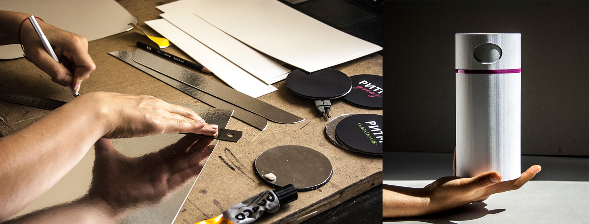

CONCEPT OF PACKAGING FOR COFFEE
Concept of new packaging for coffee. Trying to solve the problem of waste managment. Packaging that can be used for a second time. The creation a series of packaging for coffee beans TM "Ритм".
When investigating the properties of coffee, was discovered
in the coffee should not get air; coffee produce carbon dioxid; as for all bulk products, the shape should be round.
Packaging was thought out. The material from which the packaging made is recycled paper. Inside, food foil. This allows restrict access to air but at the same time passes carbon dioxide. Cylindrical packing which is handy ergonomically and in everyday life.
Researches show that for half a year coffee in such packaging has not lost its flavor. The layout was made by hand. I can assume that with a more professional manufacturing approach coffee can be stored
The packaging can be used again.
The design of the package contains a hole. From the hole can pour out the coffee. After use it can be filled with other products. for 3 years. Alternatives in the use of material are also possible.
VISUAL PACKAGING DESIGN
Created by TM "Putm". Theme is music. The music that transmits the mood and emotions. Three directions in music: jazz, classical and hrad-rock. A palette of colors is chosen based on musical covers. Made illustrations that convey the rhythms of music. The Bliss Pro font is used to send information. Created icons and table roasting coffee.